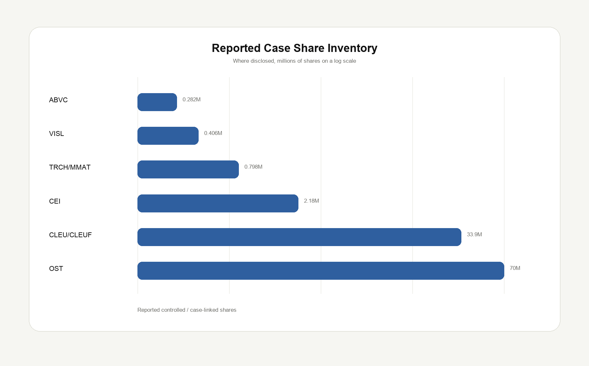
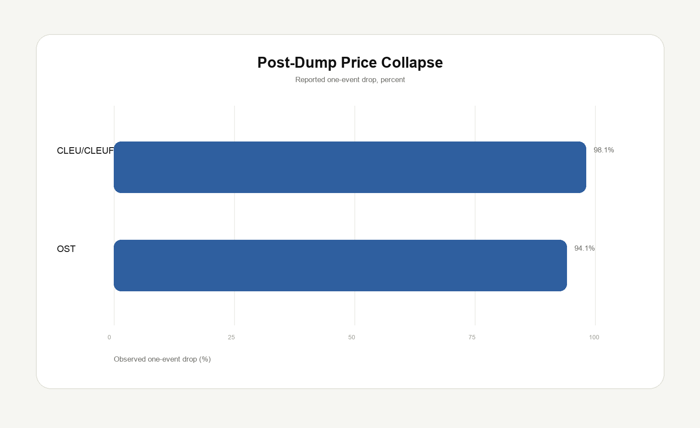
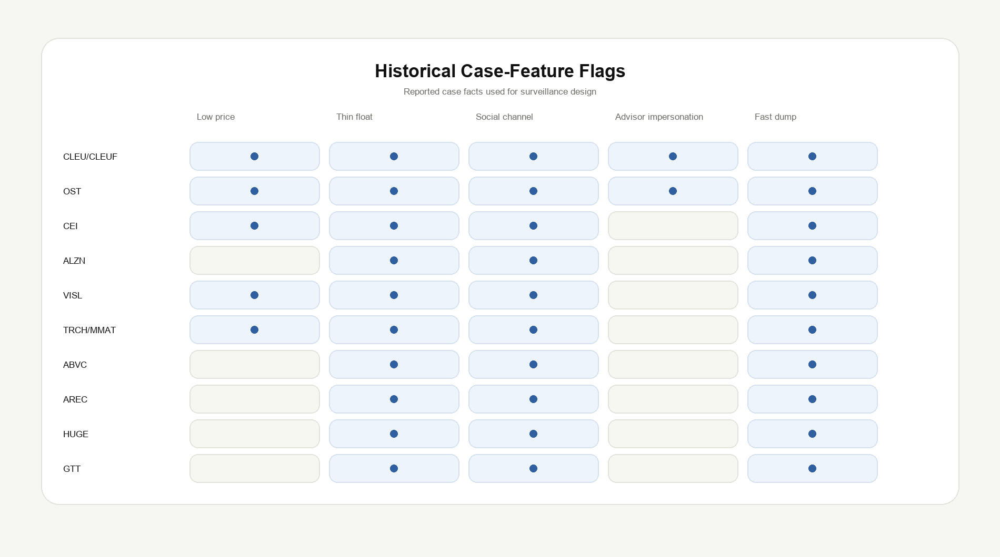

Anatomy of a High-Risk Symbol
Ten reported pump-and-dump or ramp-and-dump symbols show the same recurring structure: fragile float, attention engineering, hidden or concentrated selling inventory, and retail buyers becoming the exit liquidity.
Important: This is a research and risk-control case study, not investment advice. Some cases below are allegations from regulator or law-enforcement filings; defendants are presumed innocent unless proven guilty. Several market features are reconstructed from reported facts and public-source historical tables, so the dataset is designed for education and surveillance design, not for trading signals.
The stock tip is not the product. The buyer is the product.
A pump-and-dump scheme does not work because a small company is automatically bad. It works when the security is easy to move and the buyer base can be coordinated. Low price, weak liquidity, a thin or controlled float, limited analyst review, and a persuasive story can turn a small amount of capital into a large visible price move.
Once the chart starts moving, the chart itself becomes marketing. A private group can say “look, the market is confirming the thesis,” when the market is really reacting to a temporary demand imbalance created by the same group. The final buyer does not realize they are not entering a trade; they are providing liquidity for someone else’s exit.


What the ten symbols have in common
The cases differ in style. CLEU and OST look like modern cross-border ramp-and-dump operations using fake advisor identities and social platforms. The Atlas Trading symbols look more like influencer-driven social-media scalping: buy first, promote to followers, then sell into the volume created by the promotion.
From a brokerage risk perspective, the common theme is not the specific app or channel. The common theme is that a fragile security becomes the vehicle for manufactured demand.

The case table
This table is structured like a small risk-lab dataset. It keeps the case fact, the market feature, the promotion channel, and the operational risk band in the same row.
| Symbol | Case window | Reported cap | Case shares | Sell volume | Drop | Message / channel | Risk score |
|---|---|---|---|---|---|---|---|
| CLEU/CLEUF China Liberal Education Holdings |
Jan 2025 Ramp-and-dump / fake advisor investment club |
228M | 33.9M | 31.5M | 98.1% | WhatsApp / social media Promised up to 380% return, M&A story, buy-price instructions, U.S.-advisor impersonation |
100 Restricted |
| OST Ostin Technology Group |
Apr-Jun 2025 Pump-and-dump / social media campaign |
— | 70.0M | — | 94.1% | Social media / alleged identity misuse Coordinated social-media campaign; DOJ alleged non-bona-fide transfers and dumping; FBI reported $9.40 high to $0.55 close on June 26, 2025 |
100 Restricted |
| CEI Camber Energy |
Aug-Oct 2021 Atlas Trading alleged social-media scalping |
— | 2.18M | 2.07M | — | Twitter / Discord / podcast Promoted as swing, cheap, $2+, $3–5, $10+ while alleged selling occurred into follower demand |
85 Restricted |
| ALZN Alzamend Neuro |
Jun 2021 Atlas Trading alleged social-media scalping |
— | — | — | — | Twitter / Discord / podcast Promoted as large swing position, new highs, $12 target, drug-market upside narrative |
70 High Risk |
| VISL Vislink Technologies |
Mar 2021 Atlas Trading alleged social-media scalping |
116M | 0.406M | 0.156M | — | Twitter / Discord / podcast Promoted around CEO interview, ESPN/radio, Starlink, after-hours gapper, no-debt thesis |
85 Restricted |
| TRCH/MMAT Torchlight Energy Resources / Meta Materials |
Feb 2021 Atlas Trading alleged social-media scalping |
— | 0.798M | — | — | Twitter / Discord / podcast Promoted via merger, dividend, Tesla rumor, COVID-angle, and $10B-market-cap narrative |
85 Restricted |
| ABVC ABVC BioPharma |
Aug 2021 Atlas Trading alleged social-media scalping |
87.6M | 0.282M | 0.282M | — | Twitter / Discord / podcast Promoted as $4/$4.50 breakout and long $6+++ while alleged same-day liquidation occurred |
70 High Risk |
| AREC American Resources Corp. |
Mar 2021 Atlas Trading alleged social-media scalping |
— | — | — | — | Twitter / Discord / podcast Promoter allegedly claimed loss while complaint alleged profitable selling around the same promotion window |
70 High Risk |
| HUGE FSD Pharma |
Feb 2021 Atlas Trading alleged social-media scalping |
— | — | — | — | Twitter / Discord / podcast Promoter allegedly said he took the loss, while complaint alleged profitable dumping that day |
70 High Risk |
| GTT GTT Communications |
Mar 2021 Atlas Trading alleged social-media scalping / private call mechanics |
— | — | — | — | Twitter / Discord / private call Private call allegedly discussed repeated hype loop, follower demand, and dump mechanics |
70 High Risk |
Case notes
CLEU: fake advisor identities plus hidden unrestricted inventory
In the CLEU matter, the dangerous combination was not simply that people on WhatsApp promoted a stock. The risk stack was deeper: alleged U.S.-advisor impersonation, buy instructions, promised returns, an acquisition-style story, millions of shares deposited into subject accounts, and a public share-count picture that did not reflect later disclosures. That is why CLEU is a clean case study for brokerage controls: the trading risk, disclosure risk, and beneficial-ownership risk appeared together.
OST: issuer-side supply meets social promotion
The OST allegations show why high-risk-symbol surveillance cannot stop at price and volume. DOJ alleged non-bona-fide transactions, tens of millions of shares, and a coordinated social-media campaign. If the upstream share supply is compromised, a broker’s trading desk may only see the symptom: volume, price movement, and retail demand. The source of the risk may sit in issuance, transfer, ownership, or foreign-account structure.
Atlas Trading symbols: influencer credibility as market impact
The Atlas Trading cases are useful because the alleged mechanism is direct. A promoter buys or already holds shares, announces the stock to followers, posts targets or bullish catalysts, and then sells as followers create liquidity. The key risk variable is not only the price move. It is the mismatch between public message and private inventory.
How a risk team can use this
A good symbol-risk model should combine issuer, market, and behavior features. A low price alone is not enough. Low price plus weak liquidity plus sudden volume plus social promotion plus related-account concentration is different.
Symbol features
- Market capitalization and share price
- Public float and shares outstanding
- Average dollar volume and bid-ask spread
- Recent reverse split, offering, or abrupt issuer change
- Analyst coverage and filing quality
Behavior features
- New-account concentration in the same symbol
- Same-time limit-order clusters
- Large deposits of newly unrestricted shares
- Social mention spike or private-group call-to-action
- Promoter selling shortly after public promotion
The operational output should be a band, not a vague warning: watchlist, high risk, restricted, or post-event review. The control can then be matched to the band: alert, warning, margin restriction, opening-trade restriction, closing-only, or compliance escalation.
Data limitations
Exact historical free float, depth, spread, and 20-day average dollar volume require point-in-time market data and issuer filings. For the blog version, the dataset intentionally separates reported case facts from enrichment fields. This prevents false precision and makes the data auditable.
The next step would be to enrich the dataset using CRSP/Compustat, Nasdaq TotalView, Polygon/IEX/Refinitiv, SEC filings, and social-message archives where legally available.
References
- SEC, Complaint: SEC v. Constantin et al. / Atlas Trading.
- DOJ, Civil forfeiture complaint involving China Liberal Education Holdings (CLEU).
- DOJ, OST indictment press release.
- FBI, Seeking victim information in OST pump-and-dump investigation.
- FINRA, 2026 Annual Regulatory Oversight Report: Manipulative Trading.